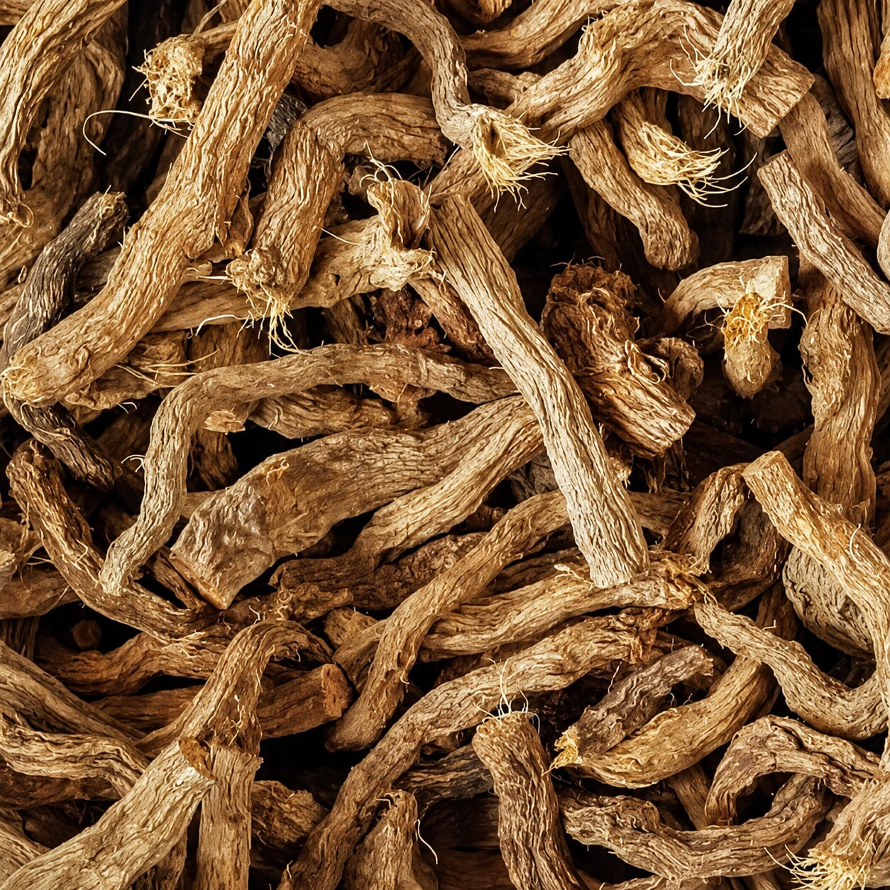

A shade-dwelling aroid of the Northeast Indian understory, distilled from its rhizome rather than any flower, leaf or fruit. Hundreds of tonnes leave the region every year as dried root — and almost none of it is distilled anywhere near where it grows.

Sugandhmantri — gandhaki in Tripura, and sold into the Western trade under the curious name “Gandhi Root” — is a broad-leaved, stemless aroid of the family Araceae, a relative of the arums and philodendrons rather than of any conventional aromatic crop. It grows low on the shaded forest floor across Northeast India and on into Indochina, and it is one of the few aromatics in this library where nothing above ground is harvested at all.
The oil lives in the rhizome — the thick, creeping underground stem. Dug in winter, dried, and distilled, it gives a fresh-woody, earthy oil built around linalool, the same molecule that carries lavender and rosewood, here wrapped in something spicier and considerably darker.
What makes it interesting to a house in Tripura is not novelty — the material has been traded for decades. It is geography. Several hundred tonnes of dried rhizome are reported to leave the Northeast each year, travelling roughly two thousand kilometres to be distilled in the perfume towns of Kannauj and Kanpur. Not one commercial still for this botanical has been documented anywhere in the region that grows it.
The first impression is unmistakably linalool — fresh, floral-woody, faintly citric, the familiar lift that lavender and rosewood share. The technical references describe it as a refreshing, pleasant, spicy reading of that note. What arrives underneath it is the part worth paying attention to: an earthy, resinous, root-cellar depth with a warm, almost smoky-caramel edge, contributed by terpinen-4-ol and a scattering of heavier sesquiterpenes.
That combination is the whole argument for the material. As a source of linalool alone it has no case to make — that molecule is available far more cheaply and far more purely elsewhere. As a complete natural that pairs a bright top with genuine earth underneath, it does something a purified single compound structurally cannot. In aromatherapy circles it is described as grounding and meditative; in perfumery terms it is a fresh-woody base with an unusual amount of soil in it.
linalool, floral-woody lift
root, soil, resinous depth
warm, dry, faintly peppery
smoky-caramel drydown
The composition of sugandhmantri oil is genuinely well documented — three independent GC-MS analyses agree on its shape, if not its proportions. What is not settled, and what matters enormously to anyone thinking about distilling it, is how much oil a given weight of dried rhizome actually surrenders. Published figures differ by more than a factor of two, and the gap is wide enough to change the answer to every question that follows.
| Compound | Class | Reported |
|---|---|---|
| Linalool | Monoterpene alcohol | 43–62% |
| Terpinen-4-ol | Monoterpene alcohol | 8–17% |
| α-Cadinol | Sesquiterpene alcohol | trace–minor |
| Spathulenol | Sesquiterpene alcohol | trace–minor |
| Cryptone | Monoterpene ketone | trace–minor |
Linalool figures span three separate analyses — 43.1%, 58.3% and 62.1% [1][3]. The ~19-point spread across nominally the same material is itself a finding: batch-to-batch variability in this oil is real and, at present, entirely unmanaged. The minor sesquiterpene fraction is small by weight but carries much of the earthy character described above.
| Source | Basis | Recovery |
|---|---|---|
| Distiller's published specification | Dry rhizome | 0.8–1.5% |
| Peer-reviewed composition study | Dry rhizome | 0.66% |
| Government-style project model | Unstated basis | rejected |
A supplier specification and a peer-reviewed study disagree by more than twofold [2][3]. A widely circulated cultivation model implies a recovery several times higher than either; its stated oil constituents do not match any published GC-MS of the species, and we discard it entirely rather than repeat it. Until this is measured on real feedstock it stays an open question, not a specification.
Everything above is drawn from published literature and supplier documentation. None of it is ours, and — unusually for this library — we are not presenting a working range for oil recovery at all, because the published evidence does not support one.
The next step on this botanical is not a brochure. It is a distillation trial on authenticated rhizome, with a GC-MS on what comes out.
Homalomena aromatica sits in Araceae — the arum family, alongside taro, philodendron and the anthuriums — which places it a long way from the citrus, grasses and resinous trees that supply most of the world's essential oils. It is stemless and low-growing, with broad heart-shaped leaves rising directly from a creeping underground rhizome, and it wants deep shade, heavy rain and acidic soil. Its aromatic wealth is stored entirely below ground.
A note on naming, because the trade is careless with it. “Gandhi Root” is a Western trade name for this species, not a separate botanical. More consequentially, Sugandha Bala — a completely different plant, Pavonia odorata — is regularly confused with it in Indian commerce, and the two are sold at very different prices under near-identical names. Any material offered without a species confirmation and a chromatogram should be treated as unidentified.
The agronomy is consistent across sources and unusually well suited to a particular kind of land. Sugandhmantri wants 40–60% shade, 2,000–3,000 mm of annual rainfall and an acidic soil around pH 4.6–5.5 — which describes the shaded understory of a maturing plantation rather than open field. Shade is not merely tolerated but rewarded: trials report appreciably heavier rhizomes under canopy than in the open. It is propagated only from rhizome cuttings bearing active buds, as seed propagation fails, planted through the pre-monsoon months and lifted in the dry winter window between December and February, after a minimum of two years in the ground.
That is where the confidence ends. Despite decades of trade in the raw material, no standardised package of practices exists, and a state agricultural university stated plainly in 2024 that commercial cultivation has not been taken up for want of reliable propagation methods. A named cultivar exists — Jor Lab SM-2, released by CSIR-NEIST — but its yield data is not publicly available. There is also a documented disease risk that the promotional literature tends to omit: collar rot caused by Sclerotium delphinii has been recorded in this crop in West Tripura, which is unsurprising for a shade aroid grown in high rainfall, and is exactly the kind of thing a first planting needs to be designed against.
A crop that positively prefers 40–60% shade is not competing for open ground. It occupies the layer beneath a canopy that would otherwise produce nothing at all — which makes it a natural companion to a tree planting rather than an alternative to one.
Sugandhmantri grows across the Northeast, with the documented trade concentrated in the Barak Valley and the surrounding hill country — the same ecological belt that runs through Tripura and into Sylhet. Tripura's own Non-Timber Forest Produce policy names gandhaki among its priority species and states explicitly that raw material should not simply be shipped out unprocessed. On the ground, that is precisely what happens: dried rhizome travels to distillers two thousand kilometres away, and the value added by distillation is added somewhere else entirely.
The conservation position is unambiguous even without a formal listing. The species carries no CITES listing and has never been assessed by the IUCN, yet twelve years of published work says the same thing — wild collection is outrunning regeneration, and one field survey in Arunachal Pradesh found the plant at only nine of fifteen sites it searched, describing the populations as poor. For us that settles the method rather than the question: if this botanical earns a place in the library it will be from cultivated rhizome, propagated deliberately. Buying wild-dug root would contradict the only version of this story worth telling.
We are publishing this entry as a documented botanical under evaluation, not as a product and not as a commitment. Two things have to be true before it could become either, and neither is true today: we need a measured oil recovery from our own distillation trial, and we need a real farmgate price for cultivated rhizome. Both are cheap to establish and neither has been done.
There is a genuine opportunity here — an aromatic that belongs to this landscape, fits beneath a canopy, and has never once been distilled at origin. There is also a real possibility that the numbers do not work. We would rather say that on the page than discover it after planting.